Vellum工作台 用户使用手册
本地素材管理桌面软件。把设计物料、任务稿、企微工单这三件事，收进一个「看得见磁盘真相」的工作台里 —— 所有素材都在你本机硬盘上，不上传任何云端。
读怎么用这份手册
这份手册写给拿到一台电脑、没怎么用过复杂软件的人。三层读法，按你手头的急事挑：
阅读约定
| 记号 | 含义 |
|---|---|
| 按钮名 | 界面上真实存在的按钮 / 开关，按这个名字去找就能找到 |
| 信息 | 补充说明、设计意图 —— 不理解也不影响操作 |
| 注意 | 容易踩的坑，看一眼能省一次返工 |
| 危险 | 可能造成数据丢失，动手前必须读 |
shot_manual、任务名是示例）。你机器上看到的是你自己的路径与数据，界面结构完全一致。目录全手册目录
第一部分 · 认识它
先花十分钟把「这个软件到底在解决什么问题」「里面的名词是什么意思」搞清楚。这一部分不涉及操作，但看懂了后面会顺很多。
1.1这个软件是干什么的
一句话：把公司散在各人电脑里的设计物料，收进一个统一的、有规矩的工作台。
它要解决的是四个老毛病：
它不做什么（很重要）
- 不做云端同步：素材只在你的硬盘上，软件不上传任何文件；
- 不做在线协作：一个工作区同一时间只在一台电脑上用；
- 不做在线编辑：改图改视频，还是用 Photoshop / Pr，软件只管「收、找、交」。
1.2三种人、三件事（典型一天）
同一套软件，三种人用法完全不同。先对号入座，再决定看哪一章。
A · 设计师（主要使用者）
- 打开软件 —— 默认就停在「工单队列」，先看有没有派给自己的新单。
- 发现有新单还没建任务 → 点 同步工单，软件自动把任务文件夹建好。
- 点开这条工单，看尺寸 / 数量 / 交期 / 参考附件（打开审批（含附件））。
- 去资源管理器（或直接在软件里）把源文件放进任务的
02-素材、03-工程。 - 回软件点 刷新/扫描；干完活把成品丢进
01-成品，再扫一次。 - 要改稿 → 任务详情里 ＋ 新建版本 建 V2，把新稿丢进去。
- 要交付 → 打包交付 生成 zip，发给申请人。
- 收工 → 完成任务，成品缩略图自动写回工单队列（供绩效与报表用）。
B · 组长 / 管理员
- 在左栏维护项目 —— 新业务立项、结项解绑。
- 看左栏 ⚠ 文件已丢失 入口 —— 是不是有人动了磁盘。
- 任务视图上扫一遍各任务的版本与交付状态。
- 工单队列看「未指派」→ 在工单详情里分派给设计师（自动通知本人）。
- 月底 → 工单队列 导出报表，按起止日期导出到「工单报表」。
C · 只是想找一张素材
- 文件视图 → 搜索框输关键词。
- 左栏点标签缩小范围（标签后面的数字就是命中条数）。
- 勾上 只看当前稿，排除历史稿的干扰。
- 找到后双击文件名，用系统默认程序打开；右键或行尾按钮「打开所在文件夹」。
1.3四层结构：工单 / 任务 / 稿 / 素材
整个软件只有四个概念。理清它们，任何一个界面你都能看懂。
三者对照
| 对比项 | 素材（文件） | 任务 | 工单 |
|---|---|---|---|
| 在软件哪里看 | 文件视图 | 任务视图 | 工单队列（顶栏第一格） |
| 磁盘上是什么 | 一个真实文件 | 一个文件夹 | 磁盘上不存在，只活在企微表格 + 本地数据库 |
| 从哪来 | 你放进文件夹 / 认领进来 | 你手动新建，或工单同步自动建 | 企微审批同步下来 |
| 数量关系 | N 个文件 ∈ 1 个任务 | N 个任务 ∈ 1 个项目 | 1 张工单 → 通常 1 个任务 |
| 能打标签吗 | 能 | 能（类别 / 项目） | 不能（字段都来自表格） |
| 有版本概念吗 | 有（属于哪一稿） | 有（V1 / V2 / V3…） | 无 |
| 删了会怎样 | 标「文件已丢失」，可重新定位 | 刷新扫描后记录自动清理 | 表格删行 → 标「已不在表中」留底 |
1.4三条铁律
这三条是软件的设计底线。理解它们，你就知道哪些操作是安全的、哪些会踩坑。
铁律一 · 本地磁盘是唯一真相，软件只是「镜子」
软件不「拥有」文件 —— 文件在资源管理器里。你在资源管理器里删了 / 挪了，软件下次扫描时会如实反映（标「文件已丢失」或清理记录）。
铁律二 · 「任务」是文件夹，不是数据库里的虚拟对象
所以：改任务名 → 文件夹跟着改名（里面文件一个不动）；改所属项目 → 文件夹搬进另一个项目文件夹；磁盘上任务文件夹没了 → 刷新扫描后记录自动摘除（留痕在 _system\backup\）。
铁律三 · 工单只负责「起头」和「回写」，不负责搬文件
工单同步只会自动建一个空的任务文件夹，不会替你把文件放进去。设计师干的活（放文件、改稿、打包）都在任务这边；做完点「完成任务」，把成品缩略图写回工单队列。
1.5安装与第一次启动
你需要准备什么
| 项目 | 要求 | 说明 |
|---|---|---|
| 电脑系统 | Windows 10 / 11，64 位 | 目前只有 Windows 安装包，没有 Mac 版 |
| 安装包 | VellumDesk-x.x.x-Setup.exe（约 180 MB） | 找管理员或同事要，微信 / 企业微信传文件都行 |
| 磁盘空间 | 建议 ≥ 20 GB 空闲 | 软件本身约 1 GB；真正吃空间的是你导入的设计文件 |
| 放素材的硬盘 | 建议单独一个盘符（如 D:）或一块移动硬盘 | 素材默认放 D:\vellum_workspace，和系统盘分开更安全 |
不用额外装什么
很多人第一次会问「要不要装 Python / FFmpeg / 图片查看器」—— 都不用。下面这些已经打包在安装包里：
| 能力 | 谁提供的 | 你要做什么 |
|---|---|---|
| 图片缩略图 | sharp（已内置） | 无 |
| 视频缩略图与时长 | FFmpeg（已随包） | 无 |
| PSD / PSB 预览 | 内置解析 | 无 |
| PDF 首页缩略图 | pdfjs（已内置） | 无 |
| 数据库 | SQLite（已内置） | 无 |
| 工单同步 / 指派 / 导出报表 | 企微组件 wecom-cli（已随包） | 只需用手机企业微信扫码授权一次 |
安装步骤（照着点）
- 把安装包存到电脑上（比如桌面），双击运行。
- 会弹出蓝色的「Windows 已保护你的电脑」—— 这是正常现象，因为安装包没有购买代码签名证书（企业内部软件常见）。点 「更多信息」→「仍要运行」，不要点「不运行」。
- 选择安装位置。安装向导会让你选目录，默认是
C:\Program Files下的系统目录 —— 建议改成非系统盘，例如D:\软件\Vellum工作台。这个目录只放软件本身，和素材工作区是两回事。 - 一路「下一步」→「安装」→ 等进度条走完 →「完成」（可以勾选直接启动）。
- 安装完成后：开始菜单会出现「Vellum工作台」；桌面可能也有快捷方式。卸载走「控制面板 → 程序和功能 → Vellum工作台」。
第一次打开，软件自动做了什么
双击图标，第一次启动大约 3~10 秒（之后会快很多）。软件会自动完成下面这些事，你不需要干预：
| 自动动作 | 结果 | 你可以怎么看 |
|---|---|---|
| 选择素材工作区位置 | 首选 D:\vellum_workspace；没有 D 盘就落到「文档」下 | 左栏最下方「工作区」区块、状态栏最右侧 |
| 建好工作区骨架 | 建 _thumbs、_system、_回收站、_已解绑的项目 | 打开文件夹就能看到 |
| 建数据库 | 工作区\_system\media.db | 不用管它，别删 |
| 预置 6 个项目 | 海南升学集训营 / 精英升学先修营 / 精英志愿填报中心 / 一对一项目部 / 精英岛 / 总部 | 左栏「项目」区块 |
| 预置标签 | 物料类别 11 项、使用场景 7 项、物料分级 4 项 | 左栏「筛选标签」区块 |
| 关闭 GPU 硬件加速 | 保证各种办公机、老显卡都能稳定打开 | 无需关心，这是稳定性设计 |
| 弹出首次配置引导 | 这台电脑第一次打开且工作区里还没有库时，自动弹一个六步向导 | 见 5.6 首次配置引导 |
1.6备份 / 换电脑 / 卸载
备份 = 复制一个文件夹
整个工作区文件夹拷走，就是完整备份（素材 + 数据库 + 标签 + 版本记录 + 工单记录全在里面）。
| 想做什么 | 怎么做 |
|---|---|
| 日常备份 | 定期把 D:\vellum_workspace 复制到移动硬盘或另一台机器（资源管理器复制粘贴即可） |
| 换电脑 | ① 新电脑装好软件；② 把工作区文件夹拷过去（盘符路径尽量一致）；③ 打开软件 → 左栏「＋ 添加工作区」→ 选那个文件夹 → 软件自动把库里的路径改成新位置（改前自动备份到 _system\backup\） |
| 换盘 | 同盘内搬家：左栏「搬移位置」；跨盘：资源管理器复制整个文件夹 → 「＋ 添加工作区」指过去 → 确认无误后再删原位置 |
| 一个软件管多个库 | 左栏「＋ 添加工作区」可以加多个（比如「2026 年素材」和「历史素材」），点一下即可切换 |
卸载
控制面板 → 程序和功能 → 卸载「Vellum工作台」。
D:\vellum_workspace（删之前务必确认已经备份）。工单队列
顶栏第一格，也是软件启动后默认停留的地方。它把企业微信「智能表格」里的审批单同步进来，让你在软件里接单、指派、建任务、导报表。这一整章的数据都来自企微表格，软件本身不产生工单。
2.1工单队列总览
这一屏就三块：左边一列筛选，右上角一排按钮，下面是工单列表。
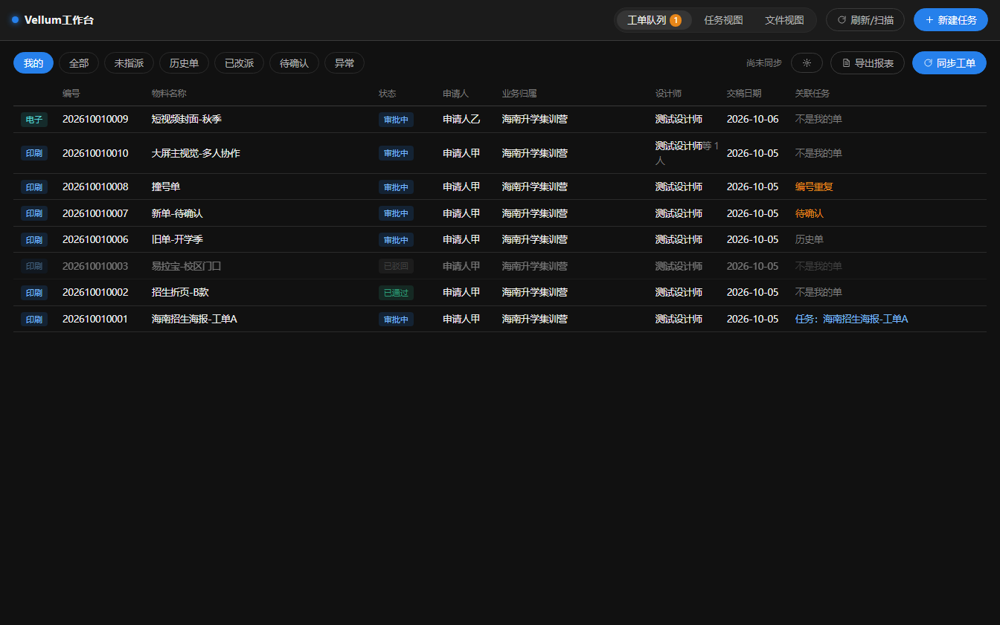
2.2七个筛选
点一下切换，列表跟着变。顶栏「工单队列」按钮上那个数字角标，口径就是「未指派」。
| 筛选 | 含义 |
|---|---|
| 我的 | 设计师列里包含本机使用者（授权账号）的工单 —— 默认就是这个 |
| 全部 | 表里所有单，不做过滤 |
| 未指派 | 设计师列为空的单（顶栏角标数字就是这个口径） |
| 历史单 | 首次同步时被标记为「历史」的存量单，不建任务 |
| 已改派 | 原来是本机的单，后来被改派给别人（任务保留、只打标记） |
| 待确认 | 子表重建后新出现的单，放行后才会建任务 |
| 异常 | ① 编号在表里出现两行（撞号）；② 业务归属填了但软件里没有同名项目 |
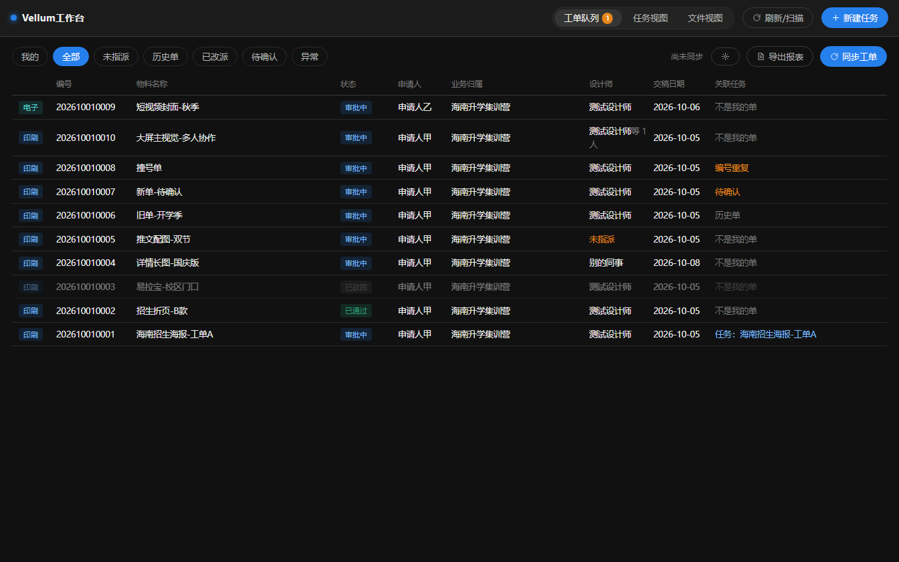
2.3列表里的提示词逐条解释
「关联任务」这一列会显示各种提示词。它们是你判断「这单为什么没建任务」的第一线索。
| 显示 | 含义 | 怎么办 |
|---|---|---|
| 任务：某某 | 已经关联到任务了 | 正常，点进去干活 |
| 已改派给 某某 | 任务还在本机，但设计师已换成别人 | 按需交接 |
| 未指派给我 | 本机使用者不在设计师列里 | 要去表格里或指派功能里改 |
| 不是我的单 | 同上，口径不同（历史遗留） | — |
| 未通过审批 | 审批还没走完（审批中 / 已驳回） | 等审批；驳回单会整行压暗 |
| 历史单 | 首次同步的存量单 | 不建任务；真要干活可在详情里手动「建任务」 |
| 待确认 | 子表重建后的新单 | 用 确认这批新单 批量放行 |
| 建任务 | 本机负责、状态就绪，但还没建 | 点它手动补建 |
| 编号重复 | 表里有两行相同编号 | 去表格修正，软件两份都保留 |
| 项目未匹配 | 业务归属在软件里没有同名项目 | 对齐项目名，下轮自动补建 |
| 已不在表中 | 表格里这一行已被删 | 软件留底，不删记录 |
2.4工单详情弹窗
点列表里任意一行打开。从上到下六个区块。
| 区块 | 内容 |
|---|---|
| 指派设计师 | 有权限时：下拉选人（选项带「在办 N 单」参考）→ 选后变标签 → 点 提交指派 才真正写回企微表并给本人发通知。见 2.7 |
| 基本信息 | 审批单编号 / 申请人 / 申请部门 / 业务归属 / 设计师 / 交稿日期 / 提交时间 / 完成时间 / 物料申请用途 / 备注 |
| 印刷信息 | 只有印刷单有：尺寸 / 印制数量 / 物料形态 / 物料类别 / 收货人 / 收货电话 / 送达日期 |
| 电子物料信息 | 只有电子单有：物料使用场景 / 物料类别 |
| 关联任务 | 已关联时显示任务名 + 文件数；未关联时给一个 建任务 按钮 |
| 报表统计 | 三个只存软件本地的字段：印刷金额 / 绩效金额 / 备注（离开输入框即存，专供导出报表用） |
| 底部按钮 | 在表格中打开（逃生口，直接跳企微表）/ 打开审批（含附件） / 关闭 |
2.5工单同步设置（齿轮）
工单队列右上角 ⚙ 打开。这一屏是工单功能的「总控台」，第一次配置就在这里。
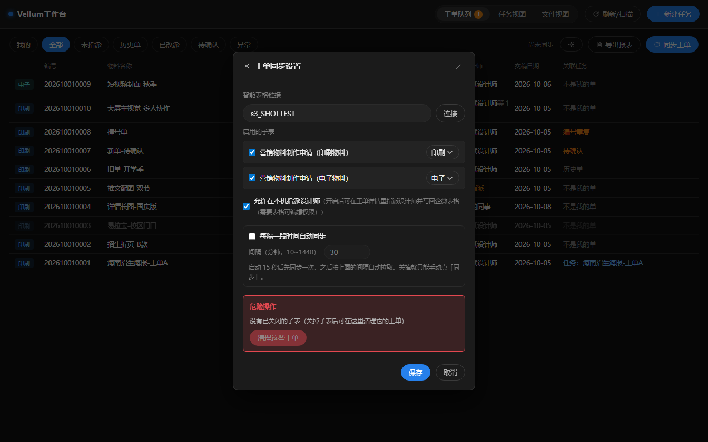
从上往下一行行看
| 元素 | 说明 |
|---|---|
| 企业微信连接 | 最上面一行：组件状态 + 来源 + 版本 + 打开连接引导（授权入口常驻，不用等首次弹窗）；旁边还有 重新打开配置向导 |
| 智能表格链接 | 把「工单队列」这张企微智能表格的链接整条粘进来 → 点 连接。连通后下面才会列出子表，并显示「已识别表格」的名字 |
| 启用的子表 | 勾选要同步的子表，并给每个子表标类型（印刷 / 电子）→ 点 保存。不勾的子表不会被同步 |
| 本机使用者 | 读自企业微信授权（换人要重新扫码）。它决定「哪些单算我的」 |
| 允许在本机指派设计师 | 开启后才能在工单详情里指派并写回企微表（需要表格可编辑权限）。改动立即生效，不用点保存 |
| 自动同步 | 见 2.8 |
| 危险操作 · 清理这些工单 | 清理已关闭子表残留的本地工单，见 6.4 第 6 条 |
2.6连接企业微信（扫码授权）
工单数据从企业微信「智能表格」来，软件要以你的身份去读它 —— 这一步就是把这台电脑绑到你本人。没做这一步，工单队列是空的。
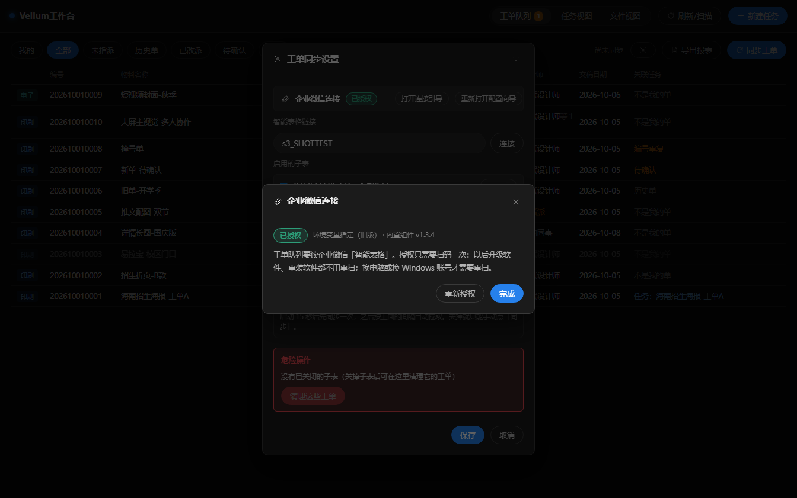
三条路进得来
- 装完第一次打开时自动弹一次（只在「组件在、但还没授权」时弹）；
- 工单队列 → ⚙ → 最上面「企业微信连接」那一行的 打开连接引导；
- 同步失败、提示授权过期时，软件会自动把它弹出来。
怎么做
- 先看第一行的状态徽标（见下表）。
- 点 开始扫码授权 → 窗口里出现一张二维码。
- 用手机企业微信扫它 → 手机上点「确认」。
- 窗口自动变成「已授权」，并显示你的名字 —— 这就是「连上了」最直接的证据。
扫码不方便？二维码旁边还给了一条授权链接，复制到手机上打开，同样能完成授权。
| 状态 | 含义 | 你要做什么 |
|---|---|---|
| 已授权 | 一切就绪 | 什么都不用做 |
| 未授权 | 组件在，但没绑过企业微信 | 点「开始扫码授权」→ 手机企业微信扫码 |
| 内置组件缺失 | 安装包不完整 | 换最新安装包重装一次（其他功能不受影响） |
| 状态未知 | 组件在但问不出状态（少见） | 点「重新检查」；还不行就重装 |
2.7指派设计师
组长 / 管理员用。把「未指派」的单分给具体的人，写回企微表并给对方发一条通知。
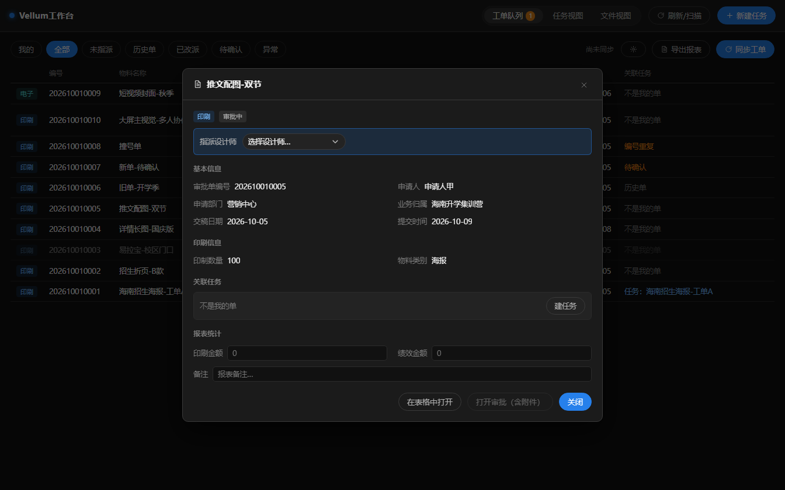
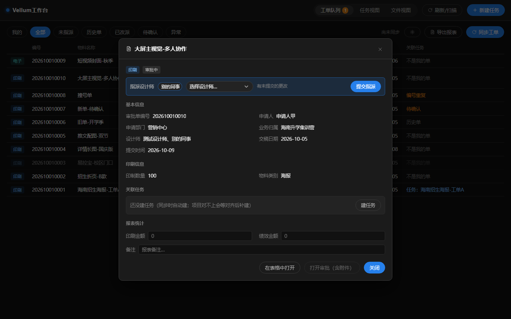
前置：先打开开关
工单同步设置里把 允许在本机指派设计师 打开（需要你在表里有可编辑权限）。没开的话，工单详情里只会显示「等待指派」。
操作三步
- 工单详情 → 指派设计师下拉，选人（每个候选后面标着「在办 N 单」，方便平衡工作量）。
- 选完变成标签，可以继续加人（多人协作单）。
- 点 提交指派 —— 这时才真正写回企微表，并给本人发通知。
三种失败提示
| 提示 | 意思 |
|---|---|
| 已指派给某某，通知未送达 | 表已改好，只是通知没发出去 —— 可在企微里直接转告 |
| 已指派给某某，写回表格失败 | 下次同步会自动补写，也可在表格中手动改 |
| 表格里的「设计师」列不可用 | 列缺失或被改名了，去表格里检查 |
② 历史单 / 待确认单 / 已删除行的单不能指派；
③ 候选设计师为空时，先在表格里填一次设计师，软件会记住这些人。
2.8自动同步
不想每天手点「同步工单」，就在工单同步设置里打开自动同步。
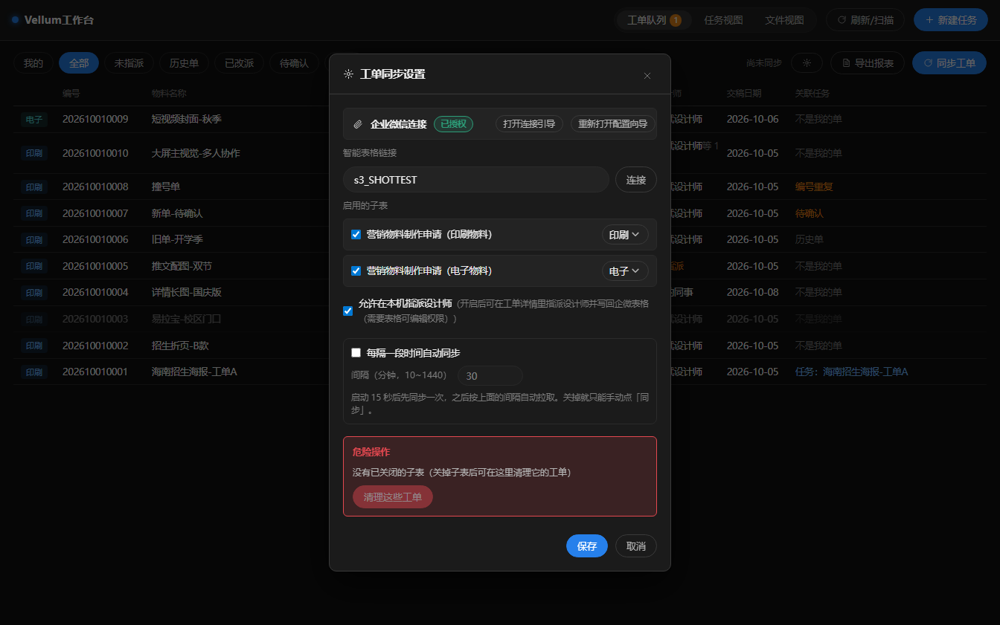
| 项 | 说明 |
|---|---|
| 每隔一段时间自动同步 | 打开后：软件启动 15 秒先同步一次，之后按设定的间隔自动拉取 |
| 间隔 | 单位分钟，可填 10 ~ 1440（最短 10 分钟，最长一整天） |
| 上次同步 | 显示上次成功 / 失败的时间；失败时可以点它跳到设置里排查 |
2.9导出报表
导出不是导一份本地文件，而是把数据写进另一张企微智能表格（叫「工单报表」）的一个新子表里。
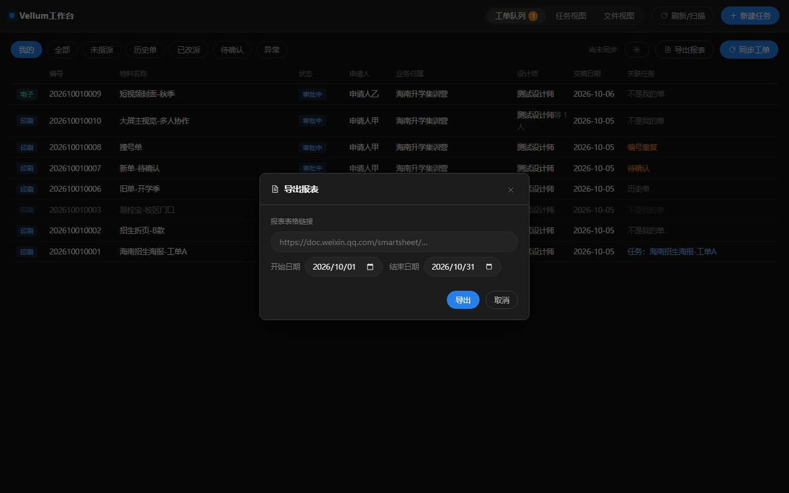
前置条件
「工单报表」这张智能表格里，要有一个子表叫 「报表模板」，并且下面这 12 列的列名和类型完全一致（表由管理员建好）：
| # | 列 | 类型 | 来源 |
|---|---|---|---|
| 1 | 工单类型（印刷/电子） | 单选（印刷 / 电子） | 工单 |
| 2 | 编号 | 文本 | 工单 |
| 3 | 完成时间 | 日期 | 工单（筛选依据） |
| 4 | 物料名称 | 文本 | 工单 |
| 5 | 业务归属 | 文本 | 工单 |
| 6 | 申请人 | 成员（多选） | 工单 |
| 7 | 设计师 | 成员（多选） | 工单（全量） |
| 8 | 缩略图 | 图片 | 「完成任务」时写回的图 |
| 9 | 印刷数量 | 数字（整数） | 工单 |
| 10 | 印刷金额 | 货币（¥） | 本地字段（软件里手填） |
| 11 | 绩效金额 | 货币（¥） | 本地字段（先空着，事后手填） |
| 12 | 备注 | 文本 | 本地字段 |
操作三步
- 工单队列 → 顶栏 导出报表。
- 把「工单报表」的链接粘进「报表表格链接」—— 填过一次就记住了，以后打开会自动预填。
- 选开始 / 结束日期 → 点 导出。结果是在「工单报表」里新建一个子表，名字就是日期区间（如
2026-10-01~2026-10-31）。
2.10同步流程与失败处理
一次「同步工单」在背后做了这些事。看懂这张图，你就知道为什么有的单自动建了任务、有的没有。
自动建任务的五个条件（缺一条就不建）
- 不是历史单（首次同步的存量单不建）；
- 不是待确认单（子表重建后的新单要先放行）；
- 本机使用者在该单的「设计师」列里；
- 审批状态是「就绪」（审批中 / 已通过这类）；
- 该单的「业务归属」能在软件里找到同名项目。
三类失败的界面提示（都不会白屏、不会静默）
| 提示 | 原因 | 怎么办 |
|---|---|---|
| 企微同步暂不可用（内置组件缺失或未授权），其余功能不受影响 | 安装包损坏 / 没授权 | 界面会自动弹出授权引导，扫码一次即可；组件缺失则重装。素材管理功能不受影响 |
| 企微授权已过期，请在企业微信里重新授权后重试 | 授权失效 | 界面会自动弹出授权引导，重新扫一次 |
| 同步失败：<具体原因> | 其他（表格删了、字段被改名、网络等） | 按提示排查；字段类问题去表格核对列名 |
另外这些警告会出现在同步结果里：配置的子表找不到了（本次跳过）、检测到子表重建（新单标「待确认」）、记录没有审批编号（跳过）、审批单编号重复（两份都保留）、写回失败（下次自动重试）。
任务管理
顶栏第二格。一个任务 = 硬盘上一个文件夹，也是你日常干活的最小单位。这一章讲：怎么建任务、怎么改、怎么分稿、怎么交付。
3.1任务视图总览
任务以卡片形式铺开。左上角那块虚线卡片是「未归属」池的入口，不是任务。
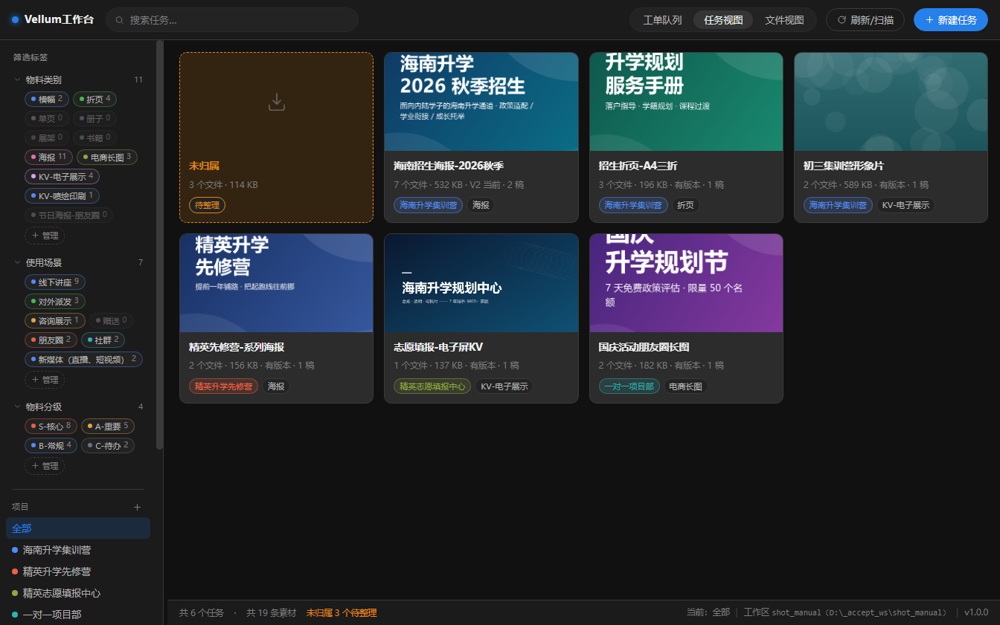
3.2任务卡片上的每个元素
| 位置 | 内容 | 说明 |
|---|---|---|
| 封面 | 任务里第一张有缩略图的文件 | 没有可预览文件时显示一个占位图标 |
| 名称 | 任务名 | 鼠标悬停显示完整磁盘路径 |
| 第二行 | 7 个文件 · 532 KB | 文件数与容量算的是全部版本（历史稿也占硬盘） |
| 版本徽标 | V2 当前 · 2 稿 | 一眼看出这个任务有几稿、当前是第几稿 |
| 已交付 | ✓ 已交付 | 打包交付过就会出现 |
| 标签 | 项目标签（带项目颜色）+ 类别标签 | 没有项目时显示橙色的「未指定项目」 |
| 右上角按钮 | ✎（编辑任务信息）/ 📥（归位到项目） | 鼠标悬停卡片才出现；📥 只在「待归类」任务上有 |
| 左上角红色角标 | ⚠ N | 这个任务里有 N 个文件已丢失 |
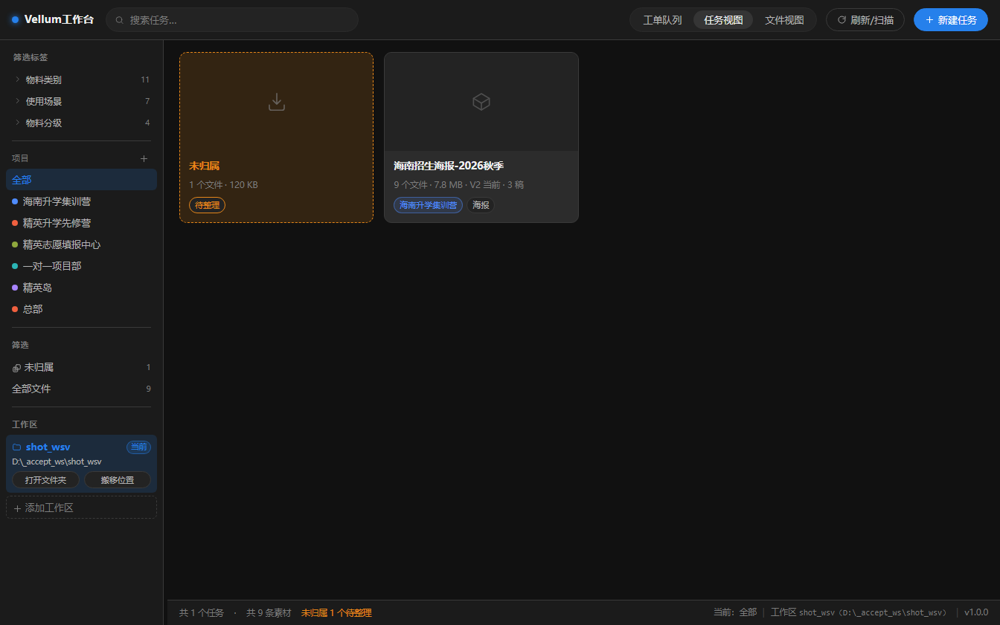
V2 当前 · 3 稿 —— 不进详情也知道这活儿改到第几版了未归属卡片与空状态
虚线框的「未归属」卡片是临时池：装着丢在工作区里、还没进任何任务的文件。点它 = 跳到文件视图的「未归属」筛选，勾选后出现认领栏（见 4.6）。池子一空，这张卡片自己就消失。
一个任务都没有时，主区会显示引导文字：点右上角「＋ 新建任务」建第一个任务，软件会自动在工作区建好文件夹和三个子文件夹。
3.3新建任务
顶栏右上角 ＋ 新建任务。
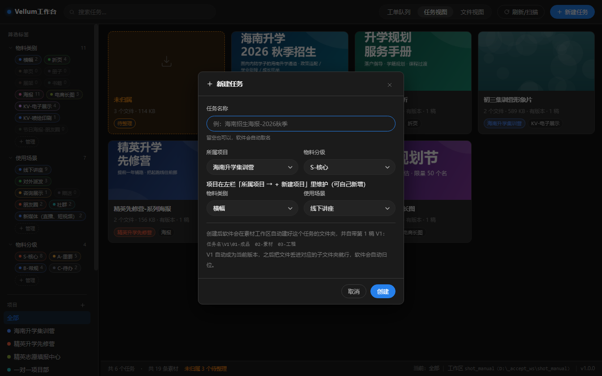
| 字段 | 怎么填 | 说明 |
|---|---|---|
| 任务名称 | 例：海南招生海报-2026秋季 | 留空也行，软件自动取名 未命名任务-日期时间 |
| 所属项目 | 下拉选 | 决定任务文件夹落在哪个项目文件夹下。项目在左栏维护 |
| 物料类别 | 点选（chips） | 清单与左栏「物料类别」同源，只此一份 |
| 使用场景 | 点选（chips） | 同上，与左栏「使用场景」同源 |
| 物料分级 | 点选（chips） | 同上，与左栏「物料分级」同源 |
点「创建」后，磁盘上会立刻长出：
项目名\任务名\V1\01-成品 02-素材 03-工程
< > : " / \ | ? * 会变成 _；开头的 . 或 _ 会变成 -（下划线开头是软件的保留前缀）；结尾的点和空格会被去掉；重名会自动加 -2。所以不用担心起名起错，但起完可以去资源管理器核对一眼。任务名\V1\三组，V1 就是当前版本，包根目录不再放三组。（历史遗留的老任务保持原样，文件归「未分版本」。）3.4编辑任务信息
两个入口：任务卡片右上角 ✎（悬停卡片才出现），或任务详情里的 ✎ 编辑任务信息。
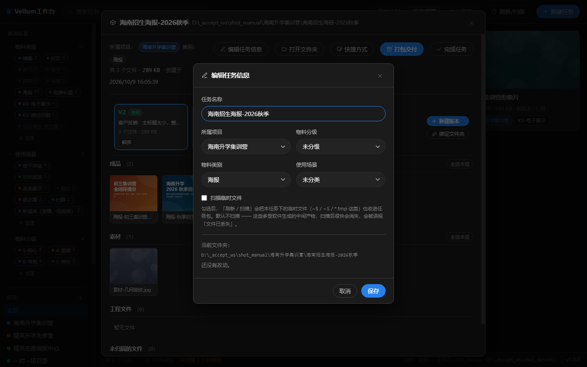
| 改什么 | 会发生什么 |
|---|---|
| 任务名称 | 工作区里的任务文件夹会一起改名，里面的文件一个不动 |
| 所属项目 | 任务文件夹会搬进对应的项目文件夹；选「不指定项目」则搬回工作区根目录（待归类） |
| 类别 / 使用场景 / 分级 | 只改数据库，磁盘上一个字节都不动 |
| 扫描临时文件 | 勾选后，「刷新 / 扫描」会把本任务下的临时文件（~$ / ~S / *.tmp）也收进任务。默认不扫描 —— 这些多是软件生成的中间产物，扫进来很快会消失，会被误报「文件已丢失」 |
_system\backup\），改名后的文件夹会变成「游离的包」出现在「待归类」里。3.5任务详情弹窗
点任意任务卡片打开。这一屏是日常停留最久的地方。

① 顶部按钮
| 按钮 | 作用 | 影响磁盘？ |
|---|---|---|
| ✎ 编辑任务信息 | 改名称 / 项目 / 三个维度 / 扫描开关 | 改名、改项目会；其余不会 |
| 📁 打开文件夹 | 用资源管理器打开任务文件夹 | 不会 |
| 🔗 快捷方式 | 在桌面和开始菜单各建一个指向任务文件夹的快捷方式 | 只在桌面 / 开始菜单建 .lnk |
| 📦 打包交付 | 把稿里的文件按分组打成 zip | 只新增一个 zip |
| ✓ 完成任务 | 成品缩略图写回工单队列 | 不会 |
② 版本条
一排格子，一格 = 一稿。点格子切换「看哪一稿」，下面的文件列表跟着变。详见 3.6。
③ 四个文件分组
| 分组 | 对应磁盘目录 | 放什么 |
|---|---|---|
| 成品 | 01-成品 | 最终交付文件 |
| 素材 | 02-素材 | 用到的图片、字体等原始素材 |
| 工程文件 | 03-工程 | PSD / AI 等源文件 |
| 未归属的文件 | 任务根目录 | 直接丢在任务文件夹下、没进三组的文件（黄字提示「可选中后移动进对应组」） |
操作：单击缩略图 = 用系统默认程序打开；右键 = 打开所在文件夹；勾选框 → 顶部出现「移动到 [下拉选组] → 确定移动」；每组右上角有 全选本组 / 取消全选。
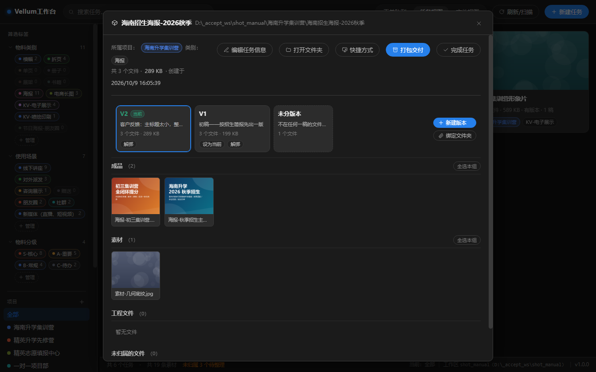
01-成品，它就被当作成品。3.6版本管理（V1 / V2 / V3…）
一稿 = 任务文件夹下的一个文件夹。软件里看到什么，硬盘上就是什么。
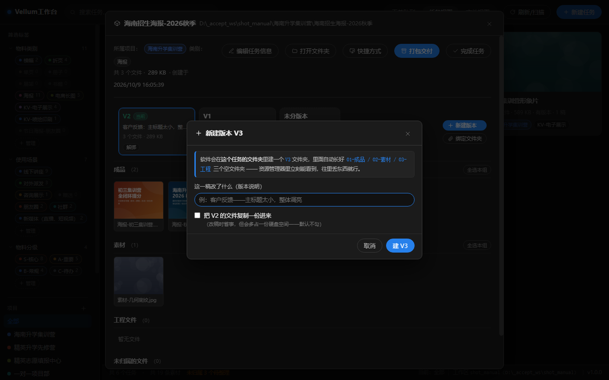
版本条上的元素
| 元素 | 作用 |
|---|---|
| V1 / V2 / … 格子 | 点一下切换「看哪一稿」，下面的文件列表跟着变 |
| 「当前」徽标 | 这一稿是当前版本（回滚指针所在） |
| 版本说明 | 每稿下面那行小字，如「客户反馈：主标题太小」 |
| ＋ 新建版本 | 建 V<下一号> 文件夹，里面自动长好三个空组 |
| 🔗 绑定文件夹 | 你自己在资源管理器建好的文件夹（如「终版-客户定稿」），在这里绑定，文件夹名和内容一个都不动 |
| 设为当前 | 回滚：只改指针，不删任何文件 |
| 解绑 | 解除管理关系，磁盘上什么都不动（并记入忽略名单，下次扫描不会又自动认回来） |
| 未分版本 | 装着没进 V1/V2 文件夹的文件（老任务常见） |
新建版本弹窗里的三个选项
| 选项 | 什么时候用 |
|---|---|
| 把任务里现在这 N 个文件收进第 1 稿 | 老任务（文件直接躺在包根的三组里）第一次纳入版本管理 |
| 把 V<n> 的文件复制一份进来 | 改稿省事，但会多占一份硬盘空间，默认不勾 |
| 版本说明 | 建议填，例如「客户反馈 —— 主标题太小，整体调亮」 |
V4，刷新扫描时软件会认它。但「当前」指针不会自己挪 —— 因为是你手工建的，软件不该替你做决定。要切换请在版本条上点「设为当前」。V<数字>。「终版」「第一稿」这类名字不会被自动识别，要用 绑定文件夹 手工纳入。3.7打包交付
任务详情 → 📦 打包交付。把这一稿的文件按分组打成 zip，按规则自动命名。
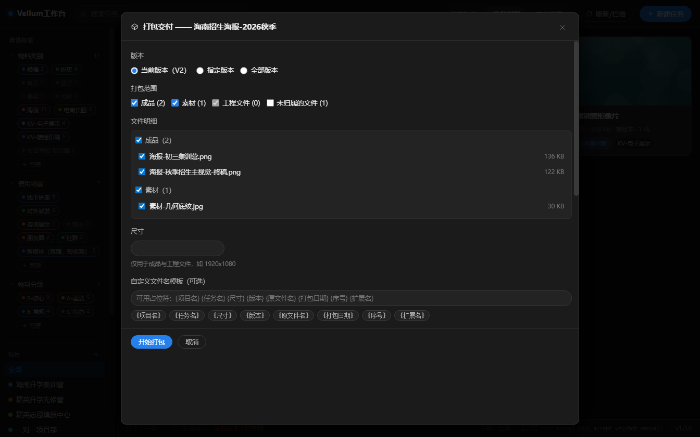
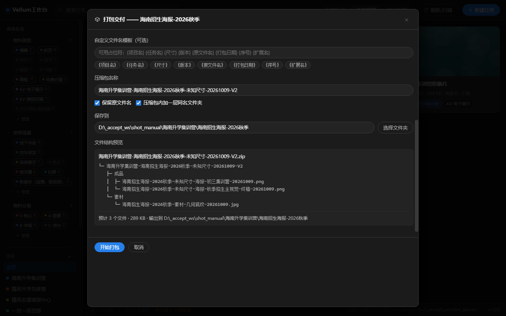
| 选项 | 说明 |
|---|---|
| 版本 | 当前版本 / 指定版本 / 全部版本（只列 V1、V2 这些） |
| 打包范围 | 成品 / 素材 / 工程文件 / 未归属的文件（默认不勾最后一项） |
| 文件明细 | 逐个文件勾选，可单独剔除 |
| 保存到 | 默认是任务文件夹，可点「选择文件夹」改 |
| 压缩包名称 | 自动按规则生成：项目名-任务名-尺寸-打包日期-V几，可手改 |
| 尺寸 | 用于文件名，如 1920x1080；打开时会尝试从第一张成品图自动读取 |
| 保留原文件名 | 不勾则内部文件名用序号代替 |
| 自定义文件名模板 | 可用占位符：{项目名} {任务名} {尺寸} {版本} {原文件名} {打包日期} {序号} {扩展名} |
| 压缩包内加一层同名文件夹 | 默认勾选（解压后不会散成一堆文件） |
| 底部摘要 | 预计 N 个文件 · 大小 · 输出到 路径 |
3.8完成任务（缩略图写回工单）
用途：把最新版本里的全部成品图（有几张传几张）生成缩略图，逐张上传写回工单队列的「缩略图」列 —— 供绩效统计和导出报表取用。
| 结果 | 提示 |
|---|---|
| 成功 | 已完成：N 张成品缩略图已写回工单队列 |
| 部分成功 | 已写回 N 张，另有 M 张未能上传（可稍后重试） |
| 任务没关联工单 | 该任务未关联工单 |
| 成品组里没有图 | 未找到成品图（请先在任务包里放一张成品图） |
| 上传 / 写回失败 | 会说明具体原因；失败不会破坏任何数据，可重试 |
3.9快捷方式
任务在磁盘上是个文件夹。这个按钮让你不开软件也能直接进那个文件夹。
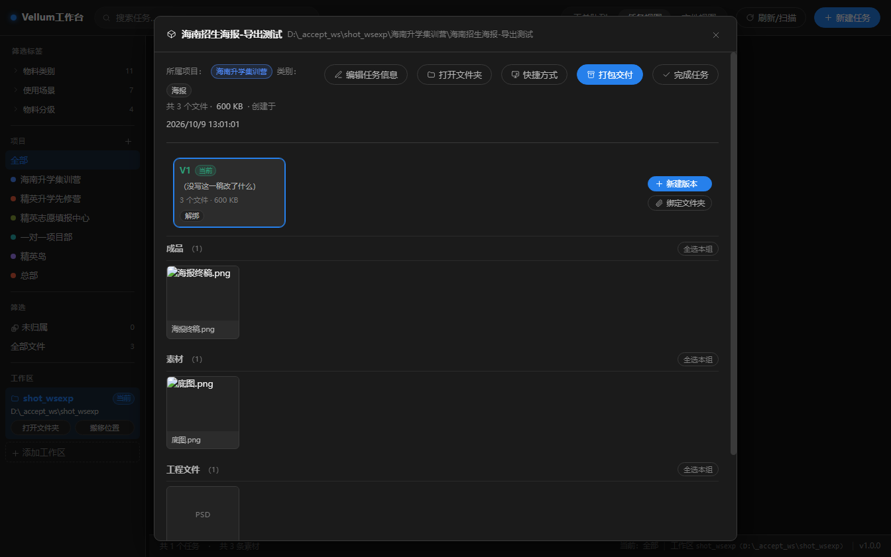
三步
- 任务详情 → 点 快捷方式。
- 桌面和开始菜单各出现一个图标 —— 以后双击就能进这个任务的文件夹。
- 完成时给一条提示：「快捷方式已建好：桌面 + 开始菜单（任务名）」。
三种边界情况
| 情况 | 行为 |
|---|---|
| 桌面或开始菜单已有同名快捷方式 | 弹确认：「『任务名』在桌面或开始菜单里已经有同名的快捷方式了，要覆盖它吗？」—— 只覆盖快捷方式本身，任务文件夹和里面的文件不会动 |
| 任务文件夹已不在磁盘 | 提示「任务文件夹不在了 —— 先在顶栏点『刷新/扫描』，确认任务还在再试」。不会给你建一个点不开的死链 |
| 某个落点写失败 | 另一处照常建好，并提示「有的位置没写成（桌面 / 开始菜单）」 |
文件管理
顶栏第三格。这里不再按「任务」看，而是按「文件」看 —— 回答的是「那张图在哪」。搜索、标签筛选、批量认领、找回丢失文件，都在这一格。
4.1文件视图总览
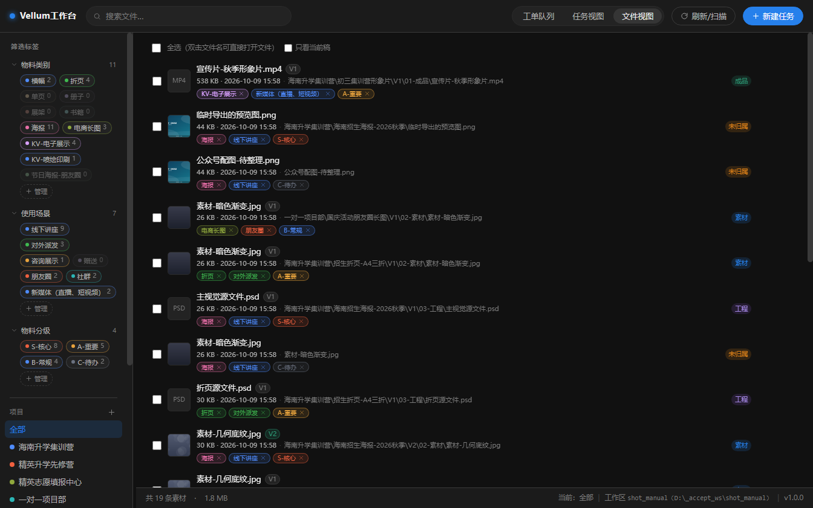
工具栏两个控件
| 控件 | 作用 |
|---|---|
| 全选 | 选中当前列表全部文件（双击文件名可直接打开文件） |
| 只看当前稿 | 只留各任务「当前版本」那一稿的文件（默认不勾，不藏用户的东西）；未分版本的老文件也会被过滤掉 |
| 批量重新定位 | 只在有文件丢失时才出现，见 4.7 |
4.2文件行上的每个元素
| 位置 | 内容 |
|---|---|
| 勾选框 | 多选后可批量认领 / 打标签 |
| 缩略图 | 图片 / 视频 / PSD / PDF 有图；其他类型显示扩展名 |
| 文件名 | 双击打开（用系统默认程序） |
| 红色角标 | ⚠ 文件已丢失 —— 记录还在，原文件找不到了 |
| 大小 / 修改时间 | 只读 |
| 相对路径 | 显示文件在任务里的位置；悬停看完整信息 |
| 标签 | 已贴的标签色块，点小叉可摘掉 |
| 版本徽标 | V3（当前稿为绿色） |
| 所在分组 | 行尾标着「成品 / 素材 / 工程 / 未归属」 |
| 行尾按钮 | 🔍 重新定位（仅丢失行）/ 打开文件 / 打开所在文件夹 |
4.3标签体系与筛选
左栏「筛选标签」下有三个维度。点一个标签，自动切到文件视图并筛选。
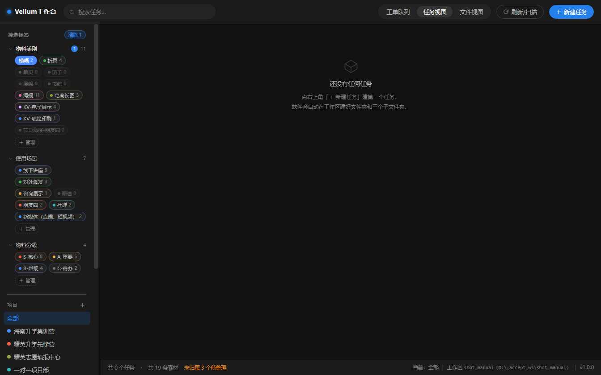
| 维度 | 默认条数 | 用途 |
|---|---|---|
| 物料类别 | 11 | 横幅 / 折页 / 单页 / 册子 / 展架 / 书籍 / 海报 / 电商长图 / KV-电子展示 / KV-喷绘印刷 / 节日海报-朋友圈 |
| 使用场景 | 7 | 线下讲座 / 对外派发 / 咨询展示 / 赠送 / 朋友圈 / 社群 / 新媒体 |
| 物料分级 | 4 | S-核心 / A-重要 / B-常规 / C-待办 |
标签后面的数字是什么
数字 = 当前项目范围内贴了该标签的素材数。点开后列出的条数，永远与这个数字一致。左边选「全部」时是全库口径，选中某个项目后就跟着项目走。
- 数字为 0 的标签会置灰，避免误导；
- 选了标签后，维度标题上会出现一个角标显示选了几个；
- 标签面板顶部出现 清除 N，一键清掉全部已选标签。
4.4标签管理（增 / 改 / 删 / 改色）
左栏每个维度后面的 管理 打开。它在哪个维度上点开，就定位到哪个维度。
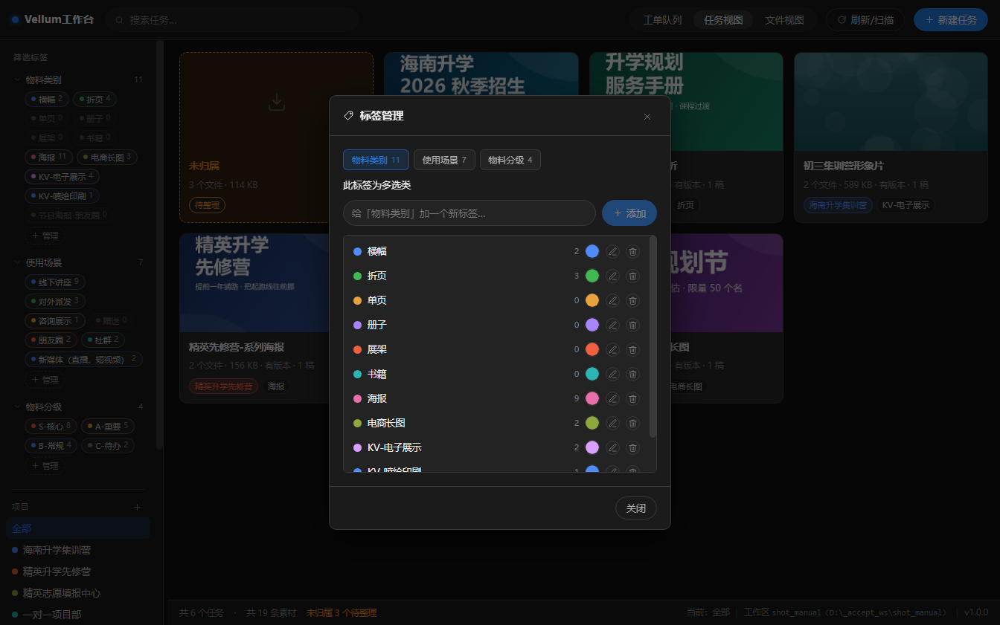
| 动作 | 说明 |
|---|---|
| 添加 | 在输入框写名字 → 点「添加」。立刻可用 |
| 改名 | 改完，所有贴了这个标签的素材跟着显示新名字；如果改的是「物料类别」，已有任务的类别也会同一时间跟着改 |
| 改色 | 只影响显示色块，不改变归属 |
| 删除 | 先弹确认。若有人在用，会写明「全库共 N 条素材在用这个标签（含已解绑项目里的），删除后这些素材会失去这个标签（素材文件本身不会被删）」。类别维度还会额外提示「目前有 N 个任务正在使用这个类别，删除后这些任务的类别也会一并去掉」 |
4.5批量打标签
文件视图勾选文件 → 认领条上点 🏷 打标签。
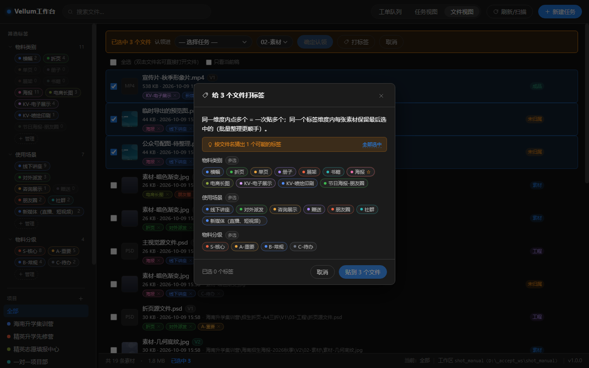
- 顶部会显示「按文件名猜出 N 个可能的标签」（自动建议，悬停能看到它是按哪段文件名猜的）；
- 点 全部选中 一键采纳建议；
- 同一维度里点多个 = 一次贴多个，但同一维度内每张素材只保留最后选中的那个；
- 弹窗里有明确提示：已选维度上的旧标签会被这批新标签替换掉；
- 右上角显示「已选 N 个标签」，底部按钮写着「贴到 N 个文件」—— 点下去才真正生效。
4.6认领：把散文件收进任务
同事偷懒，直接把文件丢在工作区里、没进任何任务 —— 这类文件会全部进「未归属」池，不报错、不丢弃，等你认领。
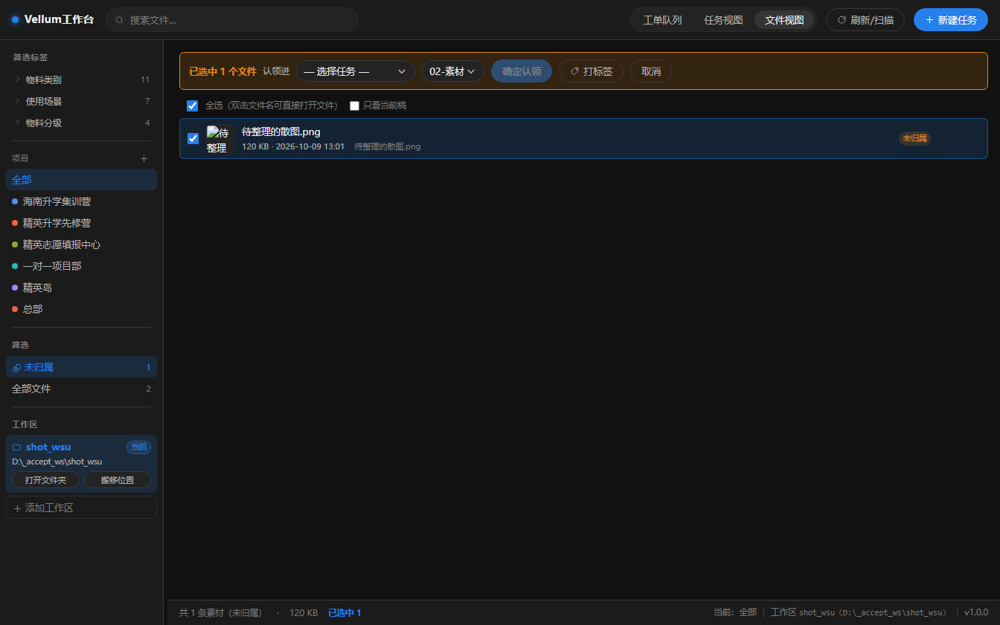
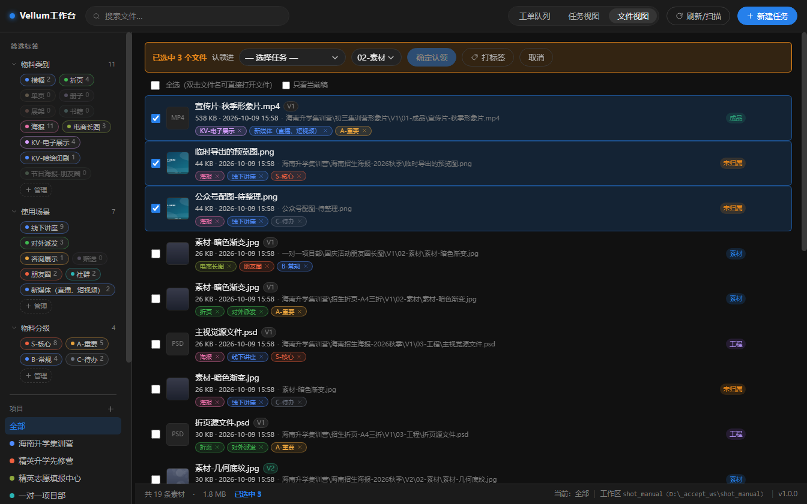
两步认领
- 在文件视图（或点虚线「未归属」卡片跳过来）勾选要认领的文件。
- 在认领条上：[— 选择任务 —] 选目标任务 → 选子文件夹（
01-成品/02-素材/03-工程）→ 点 确定认领。
「确定认领」= 把文件真实搬进目标任务的对应子文件夹（不是复制），并归属该任务。池子空了，虚线卡片自己消失。
未归属 vs 待归类（别看混）
| 未归属 | 待归类 | |
|---|---|---|
| 指的是什么 | 文件没进任何任务 | 任务没选项目 |
| 磁盘上长什么样 | 散文件直接躺在工作区里 | 任务文件夹躺在工作区根目录 |
| 在左栏哪里 | 「筛选」里的 未归属 | 「项目」里的 待归类 |
| 怎么处理 | 勾选后「认领」进任务 | 点任务卡片右上角 📥 归位到项目 |
任务名\V几\01-成品，再点「刷新/扫描」，一步到位。4.7文件已丢失与重新定位
文件丢了 ≠ 记录没了。这是刻意的设计：原文件不在时，软件保留记录并打上「文件已丢失」标记，标签和版本信息一个都不丢。
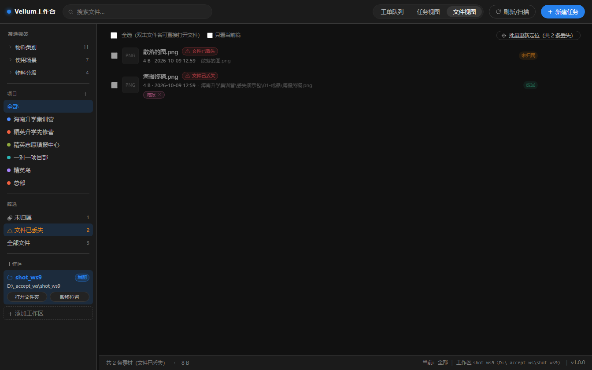
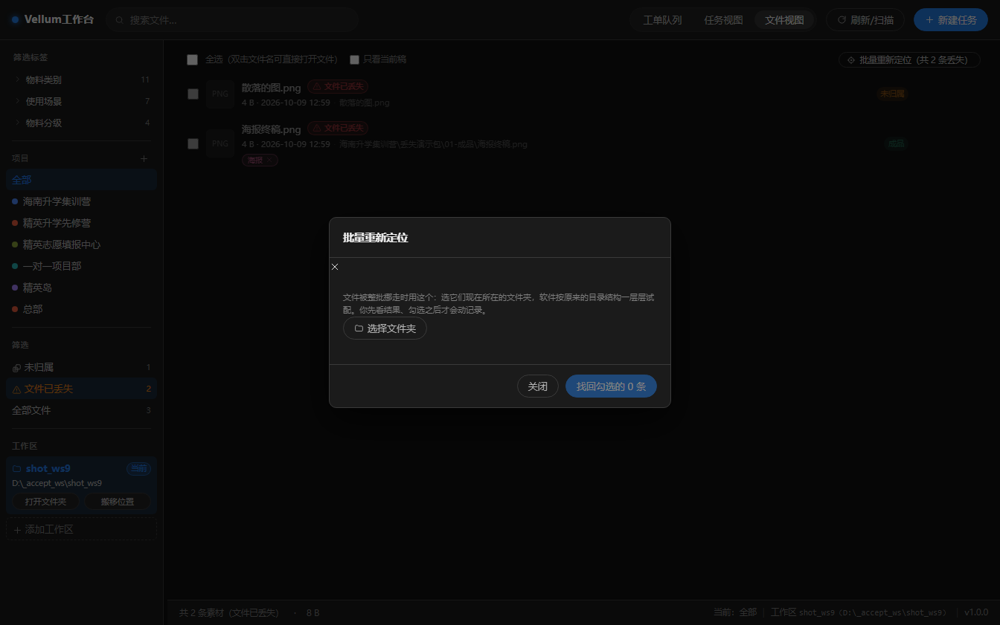
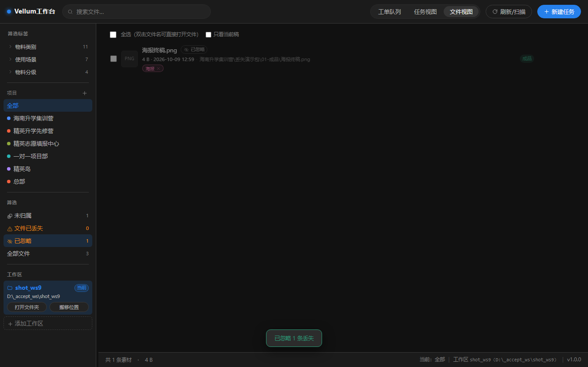
单条找回
在丢失那一行点行尾的 🔍 重新定位，指到文件现在的位置。接受条件很严格，防止找错文件：文件名 + 扩展名 + 大小三者全对才算匹配。
批量找回
- 文件视图工具栏 → 批量重新定位（有丢失时才出现）。
- 点「选择文件夹」指向它们现在所在的文件夹。
- 软件按原目录结构逐层试配 → 你先看结果、勾选之后才会改记录。
挪到工作区内已登记过的位置时，会自动合并重复记录（标签转挂，不丢）。
忽略与清记录
| 动作 | 说明 |
|---|---|
| 忽略丢失 | 选中的文件不打算找回了 → 忽略后不再提醒，记录和标签都留着，随时能撤销 |
| 撤销忽略 | 行尾的回转按钮 → 这条回到「文件已丢失」列表 |
| 清掉记录 | 只删软件里的记录，不删任何文件（这些文件在磁盘上本来就已经不在了）。以后把文件放回原目录，扫描会重新建记录 |
统计口径
丢失的文件：条数算、容量不算。任务卡片上挂 ⚠ N，封面图会跳过丢失的文件。
第三部分 · 界面其他部分
前面三章按「模块」讲。这一章补齐那些跨模块、始终在场的部分：顶栏、左栏、状态栏、项目与工作区管理，以及初装向导。
5.1顶栏
从左到右：软件名 → 搜索框 → 三格视图（工单队列 / 任务视图 / 文件视图）→ 刷新扫描 → 新建任务。
| 控件 | 作用 | 限制 / 注意 |
|---|---|---|
| 搜索框 | 任务视图下搜任务名；文件视图下搜文件名 | 工单队列下不显示搜索框；输入即搜（防抖 0.22 秒） |
| 工单队列 | 显示企微工单列表 | 顶栏第一格、启动默认打开这格；有未指派单时按钮上挂一个数字角标（悬停显示「待指派 N」） |
| 任务视图 | 显示任务卡片 | — |
| 文件视图 | 显示文件列表 | — |
| 刷新 / 扫描 | 重新扫描工作区磁盘 → 更新记录、生成缩略图 | 扫描期间按钮变灰并显示百分比，例如 生成缩略图 12/40 · 43% |
| ＋ 新建任务 | 建一个新任务（文件夹当场长好） | 需要工作区可用；项目至少有一个 |
5.2左栏
左栏从上到下四块：筛选标签 → 项目 → 筛选（快速入口）→ 工作区。
① 筛选标签
三个维度，点维度名展开。详见 4.3 与 4.4。维度右侧的 ＋ 管理 打开标签管理。
② 项目
| 元素 | 说明 |
|---|---|
| 全部 | 不按项目过滤 |
| 项目行（带颜色圆点） | 点击 = 只看该项目的任务 / 文件 |
| 行上悬浮图标 | ↑ ↓ ✎ 📤 🗑（悬停才出现，见 5.3） |
| 待归类 | 只在这些任务出现时显示 —— 任务文件夹直接躺在工作区根目录、还没选项目 |
| 📦 已解绑 N 个项目 | 只在有解绑项目时出现，点开可「还原」 |
③ 筛选（快速入口）
| 入口 | 含义 |
|---|---|
| 未归属 + 数字 | 文件没有归属任何任务（直接丢在工作区里的散文件）—— 需要「认领」进任务 |
| ⚠ 文件已丢失 + 数字 | 记录还在、但磁盘上的原文件找不到了。只有存在时才会出现 |
| 已忽略 | 你看过并忽略掉的丢失记录。只有存在时才会出现 |
| 全部文件 + 数字 | 全库所有素材 |
④ 工作区
见 5.4。
5.3项目的新建、改名、排序、删除
项目区右侧的 ＋ 新建项目；鼠标悬停在某个项目行上，会出现 5 个小图标。
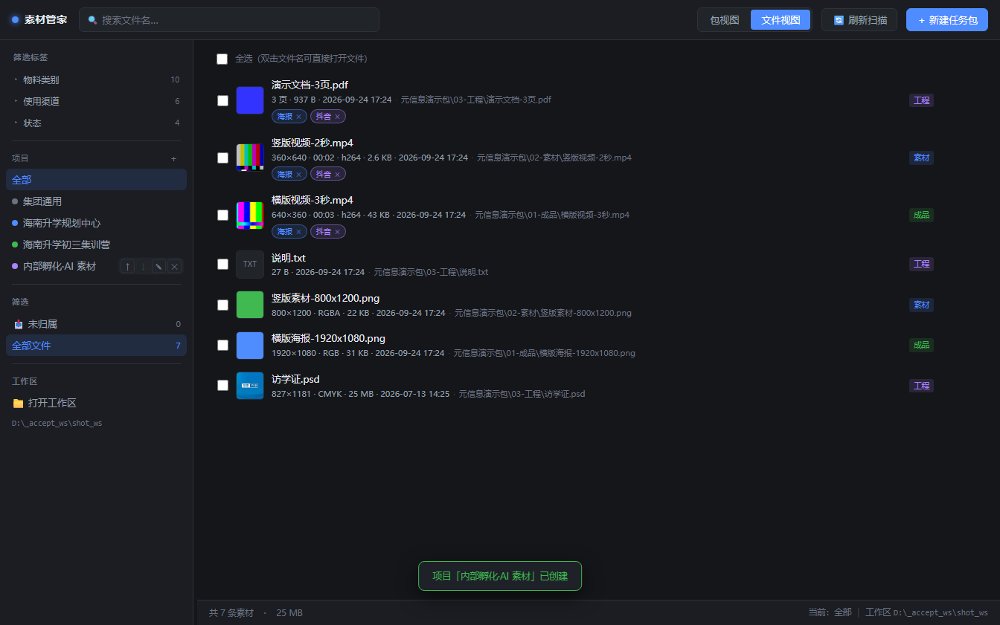
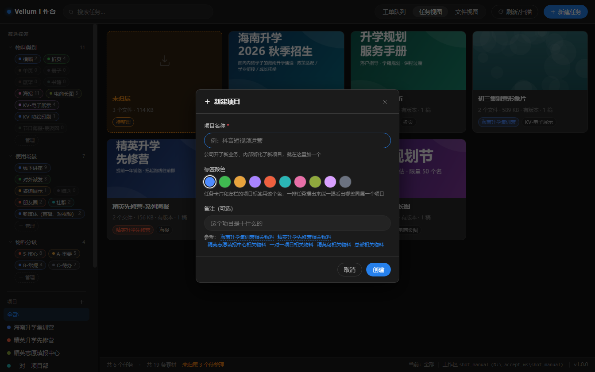
| 图标 | 作用 | 影响磁盘吗 |
|---|---|---|
| ↑ / ↓ | 上移 / 下移一位（调整显示顺序） | 不影响 |
| ✎ | 改名称 / 颜色 / 备注 | 改名会连项目文件夹一起改名，文件跟着走 |
| 📤 | 解绑项目（结项留底） | 文件夹搬进 _已解绑的项目，软件里隐身 |
| 🗑 | 删除项目（三选一） | 文件一个不少，只是换位置 |
删除项目的三个去处
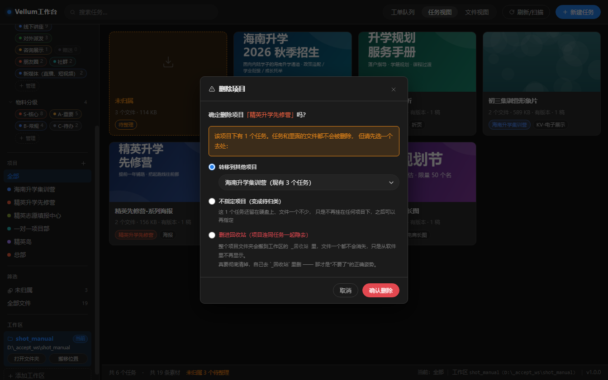
| 选项 | 结果 |
|---|---|
| 转移到其他项目 | 项目下所有任务搬进你选的那个项目文件夹 |
| 不指定项目（变成待归类） | 任务还留在硬盘上、文件一个不少，只是不再挂在任何项目下 |
| 删进回收站 | 整个项目文件夹搬到工作区的 _回收站，文件一个都不会消失，只是从软件里不再显示 |
_回收站 里删 —— 那才是「不要了」的正确姿势。解绑与还原
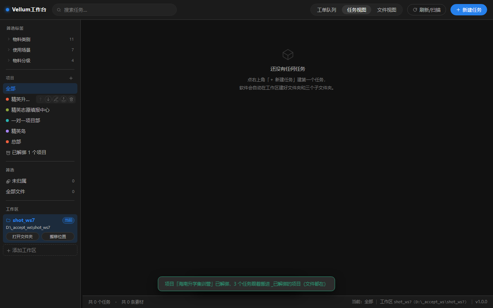
_已解绑的项目 里，随时可还原）。结项留底用它最合适。5.4工作区管理与多库
「工作区」就是存放全部素材的根文件夹。整个文件夹拷走 = 完整备份。
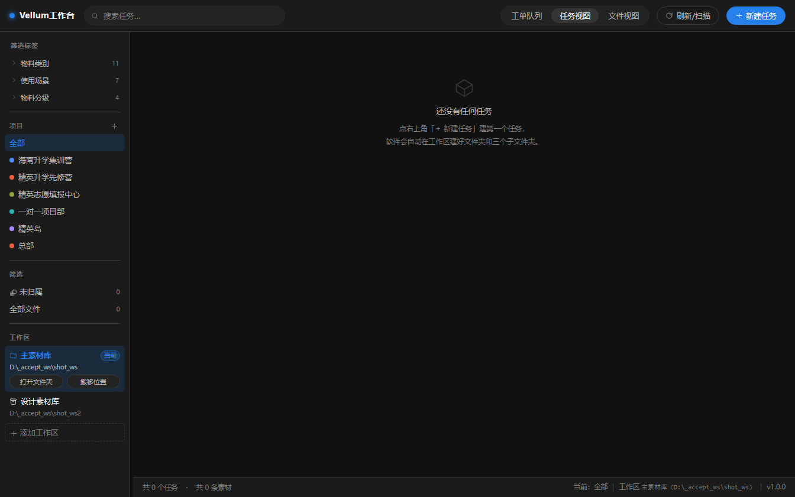
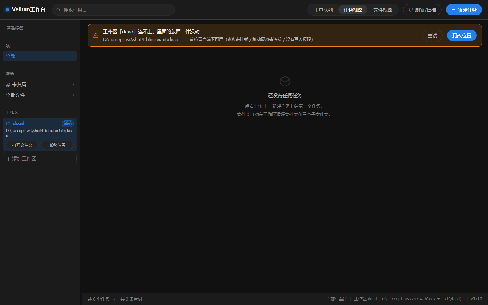
| 元素 | 说明 |
|---|---|
| 工作区卡片 | 点一下切到另一个库（会整套重新加载，筛选状态清空） |
| 「当前」标记 | 表示正在用这个库 |
| 打开文件夹 | 用资源管理器打开工作区根目录 |
| 搬移位置 | 把整个工作区搬到别的路径。同盘瞬间完成；跨盘软件不搬，会弹窗教你先用资源管理器复制再「添加工作区」 |
| ✕ | 从列表移除（只去掉记录，磁盘文件一个字节不动） |
| ＋ 添加工作区 | 选一个文件夹作为工作区：空的就新建库，有素材库的直接接进来 |
5.5状态栏与左栏宽度
状态栏（窗口最底部）
| 位置 | 显示什么 |
|---|---|
| 左 | 数量统计：共 N 个任务 · 共 M 条素材，后面还会跟「未归属 N 个待整理」「其中 N 条文件已丢失」这类提示 |
| 中 | 当前项目，例如 当前：全部 / 当前：海南升学集训营 |
| 右 | 当前工作区名称与完整路径、软件版本号 |
左栏宽度
左栏与主区之间有一条竖向分隔条：按住左右拖动可调宽度，双击恢复默认（220 px，范围 170–420 px）。
5.6首次配置引导（初装向导）
这台电脑第一次打开软件、且工作区里还没有库时，会自动弹一个六步向导，把该配的事一次配好。
六步走完
| 步 | 名称 | 内容 | 必做？ |
|---|---|---|---|
| S0 | 欢迎 | 一句话说清「这个软件能干什么、接下来要配什么（大概 2 分钟）」 | — |
| S1 | 工作区 | 显示软件已经自动选好的位置（含完整路径）+ 「更改位置」；一句话说明「整个文件夹拷走 = 完整备份」 | 建议做 |
| S2 | 连接企业微信 | 扫码授权区（状态徽标 + 二维码 / 授权链接 + 本机使用者）；说明「只影响工单，其余功能完全离线可用」 | 可跳过 |
| S3 | 工单表配置 | 粘「工单队列」智能表格链接 → 连接 → 勾选子表并标类型 → 保存 | 可跳过 |
| S4 | 报表表配置 | 粘「工单报表」链接（填过就记住）；明确标注「月底导报表才需要」 | 可跳过 |
| S5 | 完成 | 一张「你已经配好了什么」的清单（每项标 已配置 / 已跳过）+ 各项以后去哪找 | — |
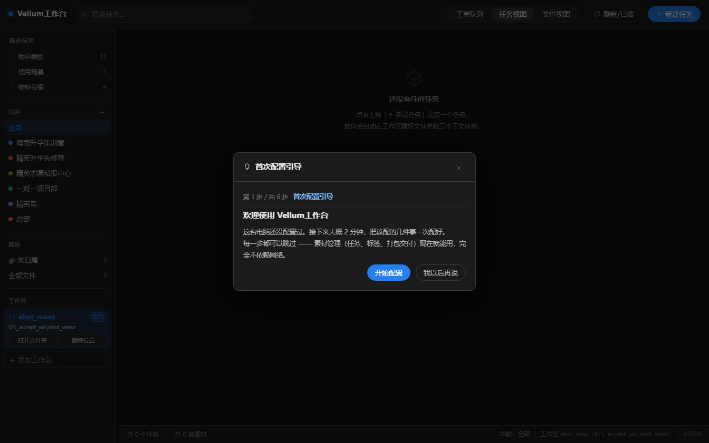
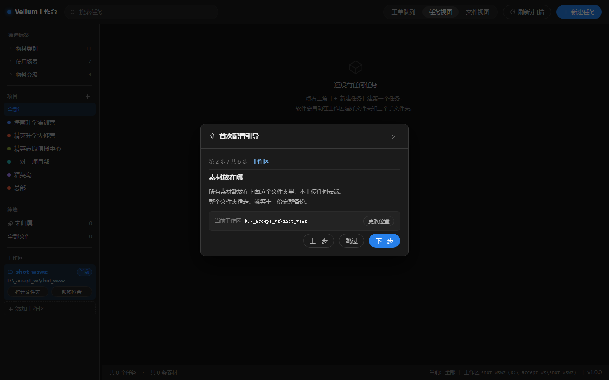
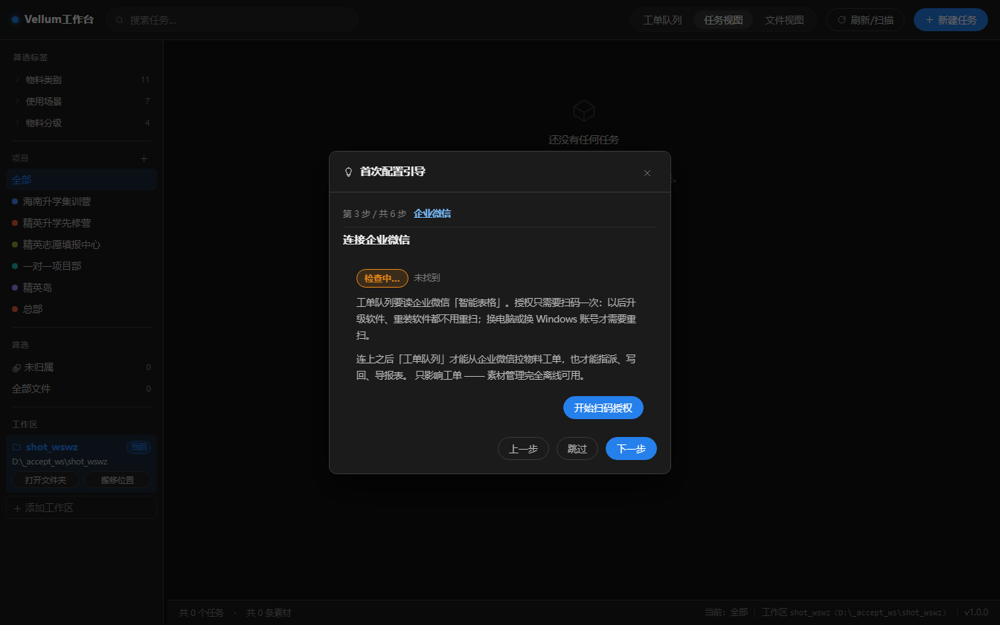
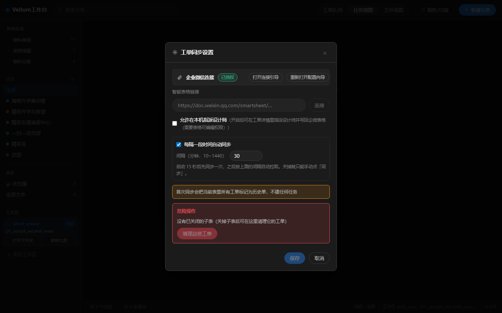
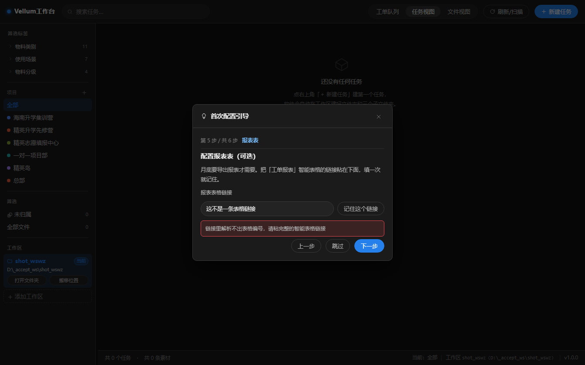
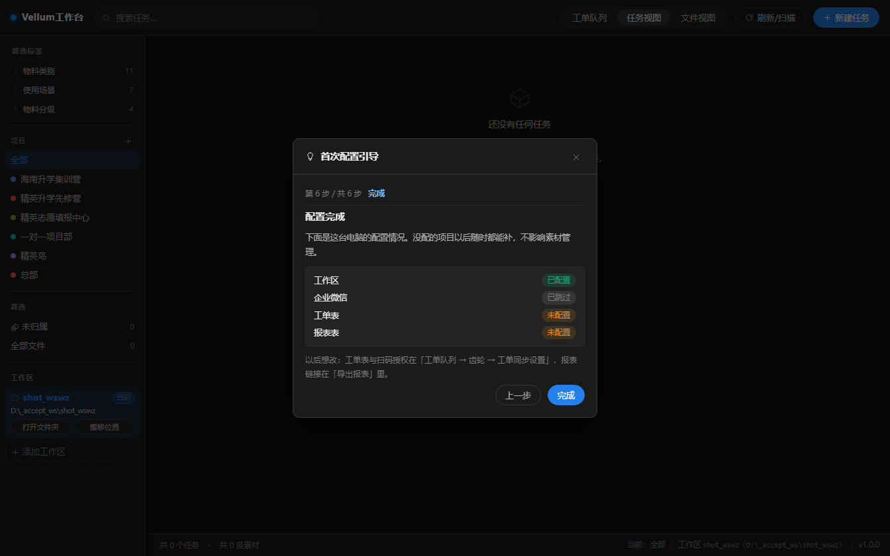
三条使用说明
- 每一步都能跳过 —— 不逼人配。只想管素材的人，全部跳过、直接点「完成」即可。
- 关闭窗口（✕ / Esc）不算「以后再说」 —— 下次启动还会弹；只有点 完成 或 我以后再说 才写标记、往后不再弹。
- 点「完成」后会自动跳到工单队列，并提示点一下「同步工单」，顺手就能看单。
第四部分 · 速查与下载
查按钮、查格式、查边界、查疑难。这一章不用通读，放在手边随时翻。
6.1全部弹窗与按钮速查表
弹窗一览（共 18 个）
| 弹窗 | 打开方式 | 主要按钮 |
|---|---|---|
| 首次配置引导 | 装完第一次打开自动弹；以后从「工单队列 → ⚙ → 重新打开配置向导」 | 开始配置 / 上一步 / 跳过 / 下一步 / 完成 / 我以后再说 |
| 新建任务 | 顶栏「＋ 新建任务」 | 创建 / 取消 |
| 编辑任务信息 | 任务卡片 ✎ 或任务详情「编辑任务信息」 | 保存 / 取消 |
| 任务详情 | 点任务卡片 | 编辑任务信息 / 打开文件夹 / 快捷方式 / 打包交付 / 完成任务 / 新建版本 / 绑定文件夹 / 设为当前 / 解绑 / 确定移动 |
| 打包交付 | 任务详情「打包交付」 | 选择文件夹 / 开始打包 / 打开压缩包 / 打开文件夹 / 取消 |
| 新建版本 | 版本条「＋ 新建版本」 | 建 V<n> / 取消 |
| 绑定文件夹 | 版本条「绑定文件夹」 | 绑成 V<n> / 取消 |
| 新建 / 编辑项目 | 左栏项目区 ＋ 或行上 ✎ | 保存 / 取消 |
| 删除项目 | 项目行上 🗑 | 转移到其他项目 / 变成待归类 / 删进回收站 |
| 已解绑的项目 | 左栏「📦 已解绑 N 个项目」 | 还原 / 关闭 |
| 标签管理 | 左栏维度「管理」 | 添加 / 改名 / 改色 / 删除 |
| 打标签 | 认领条「🏷 打标签」 | 全部选中 / 贴到 N 个文件 / 取消 |
| 批量重新定位 | 文件视图工具栏（有丢失时） | 选择文件夹 / 找回勾选的 N 条 / 关闭 |
| 企业微信连接 | 首次启动自动弹 / 工单设置顶部「打开连接引导」/ 同步失败时自动弹 | 开始扫码授权 / 重新授权 / 取消授权 / 完成 / 稍后再说 |
| 工单同步设置 | 工单队列 ⚙ | 连接 / 保存 / 打开连接引导 / 重新打开配置向导 / 清理这些工单 |
| 工单详情 | 点工单行 | 提交指派 / 建任务 / 在表格中打开 / 打开审批（含附件） / 关闭 |
| 导出报表 | 工单队列「导出报表」 | 导出 / 取消 |
| 确认清理工单 | 工单设置「危险操作 → 清理这些工单」 | 确认清理 / 取消 |
鼠标 / 键盘小技巧
| 操作 | 效果 |
|---|---|
| 双击文件名 | 用系统默认程序打开文件 |
| 单击缩略图（任务详情） | 打开文件 |
| 右键缩略图 / 文件行 | 打开所在文件夹 |
| 拖左栏分隔条 | 调宽度；双击复位 |
| 悬停任务卡片 | 显示 ✎ / 📥 按钮 |
| 悬停项目行 | 显示 ↑ ↓ ✎ 📤 🗑 按钮 |
| 悬停大多数按钮 | 停 1 秒有说明性提示 |
6.2支持的素材格式
| 类别 | 扩展名 | 缩略图 | 额外读取信息 |
|---|---|---|---|
| 图片 | jpg / jpeg / png / webp / gif / bmp / tiff / avif | 有 | 宽高、色彩模式 |
| 视频 | mp4 / mov / mkv / avi / webm / m4v / mpg / mpeg / wmv / flv / ts / 3gp | 有（抽帧） | 时长、编码 |
| PSD / PSB | psd / psb | 有（内嵌预览） | 尺寸 |
| 有（渲染第 1 页） | 页数 | ||
| 其他任意类型 | ai / zip / docx / ttf … | 无（显示扩展名） | 仅文件名、大小、时间 |
任何类型都能被登记进库、认领进任务、参与版本与打包 —— 只是没有缩略图。缩略图统一宽 320 px，所以大图不会拖慢界面。
安装目录\resources\ffmpeg\ 下是否有 ffmpeg.exe（随包分发）。缺失时图片仍正常，只有视频功能降级。6.3边界：限制清单
| # | 限制 | 具体表现 |
|---|---|---|
| 1 | 软件没有「删除」功能 | 界面里找不到「删除素材 / 删除任务」按钮。想删文件请去资源管理器；想删任务就删任务文件夹再刷新扫描 |
| 2 | 文件丢失 ≠ 记录消失 | 原文件被删 / 挪走 → 记录保留并标「文件已丢失」，可重新定位 |
| 3 | 同一时刻只有一个「当前工作区」 | 多库可切换，但同时只用其中一个；切库会清空筛选状态 |
| 4 | 跨盘搬移工作区要手工 | 软件只做同盘瞬时搬移，跨盘弹窗教你自己复制 |
| 5 | 版本文件夹只认 V<数字> | 手工建的 V1 / V2 会自动纳入；「终版」这种要手工「绑定」 |
| 6 | 「物料类别」清单全局唯一 | 建任务的类别选项 = 左栏标签里的物料类别；删 / 改会影响已有任务 |
| 7 | 项目名不能以下划线或点开头 | 会被拒绝（与软件自己的目录冲突） |
| 8 | 任务名里的非法字符会被净化 | 见 3.3；建完可去资源管理器核对 |
| 9 | 缩略图统一宽 320 px | 覆盖图片 / 视频 / PSD / PSB / PDF；其他类型只显示扩展名 |
| 10 | 打包不包含丢失的文件 | 已丢失的文件不进 zip，列表里也不显示 |
| 11 | 关掉子表 ≠ 清空数据 | 已同步进来的工单会留在本地，要手动清理（见 6.4 第 6 条） |
| 12 | 工单字段只读 | 工单信息来自表格，软件里改不了（除本地三个字段） |
| 13 | 指派至少留一人 | 接口无法清空成员列，要清空须去表格手动清 |
| 14 | 统计口径 | 任务卡片 / 状态栏的「文件数、容量」算全部版本，与「占硬盘多少」口径一致 |
| 15 | 标签在同一维度内互斥 | 批量打标签时，同一维度内每张素材只保留最后选中的那个 |
| 16 | 文件必须放在任务文件夹结构里才归属任务 | 丢在工作区任意位置的散文件只进「未归属」池，需要手动认领 |
| 17 | 环境要求 | Windows 10 / 11 64 位；安装包未签名（会出现「已保护你的电脑」，选「更多信息 → 仍要运行」）；无显卡要求（软件主动关闭 GPU 加速） |
| 18 | 网络依赖 | 素材管理完全离线可用；只有工单同步、指派写回、导出报表需要能访问企业微信 |
6.412 个「能干但别干」的动作
下面这些操作软件不会拦你（有的拦不了），但只要做了，就会遇到「记录对不上 / 东西找不到」的麻烦。每条都写清后果和正确做法。
| # | 动作 | 后果 | 正确做法 |
|---|---|---|---|
| 1 | 在资源管理器里改任务文件夹的名字 | 刷新扫描后旧任务的记录 + 标签 + 版本关联被清理（留痕在 _system\backup\），新名字的文件夹变成「游离的包」出现在「待归类」 | 用任务卡片 ✎「编辑任务信息」改名 —— 软件会改名并保住全部关联 |
| 2 | 把任务文件夹挪到别处 | 同上：记录被清理 / 标丢失，标签、版本、工单关联全丢 | 用「编辑任务信息」改项目（软件搬文件夹）；换盘用工作区搬移 |
| 3 | 把文件直接丢在工作区根目录 | 会进「未归属」池，不属于任何任务 / 版本，统计口径混乱 | 丢进 任务\V1\01-成品（或对应组）再刷新扫描；或丢进去后「认领」 |
| 4 | 手工改名 V1 / V2 文件夹（如改成「第一稿」） | 这一稿在版本条上显示「文件夹不在」，文件可能掉进「未分版本」 | 保持 V<n> 命名；想用别的名字就「绑定文件夹」 |
| 5 | 删 _system 文件夹（尤其 media.db） | 所有标签、版本记录、工单记录、本地字段全部丢失；素材文件还在，但会变成待归类 / 未归属，需要重新整理 | 备份 / 搬移请整目录复制，别单独动 _system |
| 6 | 关掉子表后不做清理 | 关闭只停止「以后同步」，已同步进来的工单会永久留在本地 | 工单设置 → 危险操作区 →「清理这些工单」（会先预览条数、二次确认、删除前自动备份到 _system\backup\）。已建任务包的工单会被跳过不删 |
| 7 | 用网盘 / OneDrive 同步目录当工作区 | 云端占位符、改名、并发写会让大批文件被判「文件已丢失」，甚至数据库损坏 | 工作区放在本机固定盘或移动硬盘，不要放在自动同步目录里 |
| 8 | 两台电脑同时打开同一个工作区（共享盘 / 网络位置） | 数据库是单机独占的，并发写有损坏风险；两边操作也会互相覆盖 | 一个库同一时间只在一台机器上用；跨机用「复制工作区 + 添加工作区」 |
| 9 | 把「解绑项目」当「删除」用 | 项目在软件里彻底隐身，容易误以为文件没了（其实在 _已解绑的项目 里） | 结项留底用它；只是想清理视图也可以，但要知道东西还在，随时可「还原」 |
| 10 | 删进回收站后，再去资源管理器删 _回收站 | 这是唯一能真正彻底删除素材的路径，删了不可恢复 | 确认一个季度内都不需要了再删 |
| 11 | 在智能表格里改列名 / 删列 / 删行 | 删行 → 软件标「已不在表中」留底（不删记录）；改列名 → 对应字段读不进来，会出警告；删「设计师」列 → 指派不可用 | 改结构前先在软件里同步一次留存基线；改完再同步看警告 |
| 12 | 软件正在跑扫描 / 同步时，直接拔移动硬盘或强退 | 工作区变成「连不上」，需要「重试」；极端情况下会留下半成品临时文件 | 等操作结束；非正常退出后先「重试」，再「刷新 / 扫描」 |
6.5常见问题 FAQ
双击图标没反应 / 一闪就没了？
① 先等 10 秒（首次启动要初始化工作区）；② 若弹出「启动 / 运行异常」黑框，把里面的内容截图发给管理员；③ 检查是不是杀毒软件拦了 —— 把安装目录加进白名单。
顶部出现黄条「工作区『xxx』连不上，里面的东西一件没动」？
说明工作区所在的盘没挂上 / 没权限。插好移动硬盘后点 重试；路径变了就点 更改位置 指到新位置。软件绝不会偷偷换位置。
我把文件放进文件夹了，软件里怎么没有？
软件不会自动发现。回软件点 刷新/扫描。如果还是没有：① 确认文件放在 任务文件夹\V几\01-成品|02-素材|03-工程 里；② 检查左栏筛选是不是选了某个标签 / 项目把结果过滤掉了。
文件行显示「⚠ 文件已丢失」怎么办？
说明记录还在、磁盘上的原文件找不到了。点行尾 🔍 重新定位 指到它现在的位置（校验：文件名 + 扩展名 + 大小全对才接受）；一批文件同时被挪走就用工具栏 批量重新定位。
为什么工单同步提示「企微同步暂不可用」？
两种可能：① 没授权（最常见）—— 界面会直接弹出授权引导，用手机企业微信扫一次就好；② 内置组件缺失（安装包不完整，少见）—— 换最新安装包重装一次。两种情况都不影响素材管理、任务、打包这些功能。
换了电脑 / 换了 Windows 登录账号，要做什么？
重新扫码授权一次（首次启动会自动弹引导）。授权凭据存在 Windows 用户目录里，换软件版本、重装软件都不用重扫。
同步了，但我的单没自动建任务？
按 2.10 的五个条件逐条看。最常见是 「业务归属」和软件里的项目名不一致 —— 把两边名字改成一样，下轮同步会自动补建；也可以打开工单详情点「建任务」手动补。
「异常」筛选里出现的单是什么意思？
① 编号在表里出现两行（撞号）→ 去表格修正；② 业务归属的项目在软件里不存在 → 对齐项目名。
我的单没出现在导出报表里？
先看这张单的完成时间是不是空的 —— 审批还没走完的单，完成时间是空的，天然不进报表。再看选的起止日期区间有没有覆盖它。另外「已不在表中」的留底单也不进报表。
点「完成任务」报错？
「该任务未关联工单」→ 这个任务不是从工单建的，没有可回写的单；「未找到成品图」→ 先往任务的 01-成品 放一张成品图（图片），刷新扫描后再点；上传 / 写回失败 → 多为网络或权限问题，稍后重试，不影响任何已有数据。
为什么「关闭子表」之后工单还在？
关闭子表只停止以后的同步，不会删历史数据。用「工单同步设置 → 危险操作 → 清理这些工单」（已建任务包的会跳过）。
视频没有缩略图？
检查 安装目录\resources\ffmpeg\ 下是否有 ffmpeg.exe（随包分发）。缺失时图片仍正常，只有视频功能降级。
界面字太小 / 左栏太窄？
左栏宽度：拖分隔条，双击复位。界面整体缩放请用系统的显示缩放设置。
软件里的数量统计和资源管理器里数出来的不一样？
正常。软件统计的是登记在库里的记录：_thumbs / _system / _回收站 等下划线开头的目录一律不统计；「文件数、容量」算全部版本。
能多人同时用吗？
每人一台电脑、各自一个工作区，各自独立使用。需要共享素材就把整个工作区文件夹复制给对方（或放到共享盘让对方「添加工作区」，但不要两边同时打开写）。
6.6术语表
| 词 | 在本软件里的意思 |
|---|---|
| 工作区 | 存放全部素材的根文件夹（如 D:\vellum_workspace）。整个文件夹拷走 = 完整备份 |
| 项目 | 组织层第一级，磁盘上是一个文件夹（如「海南升学集训营」） |
| 任务 | 也叫「包」。一个活儿 = 一个文件夹。界面上就是任务卡片 |
| 素材 / 文件 | 任务里的一个个真实文件 |
| 稿 / 版本 | 任务里的 V1 / V2 / … 子文件夹；「当前版本」是回滚指针 |
| 未归属 | 文件没进任何任务（散在工作区里） |
| 待归类 | 任务没选项目（文件夹躺在工作区根目录） |
| 文件已丢失 | 记录还在，磁盘上的原文件找不到了 |
| 认领 | 把未归属的文件搬进目标任务 |
| 工单 | 企微智能表格里的一条审批记录（同步进软件） |
| 历史单 / 待确认 | 首次同步的存量单 / 子表重建后的新单 —— 都不自动建任务 |
| 打包交付 | 把任务里的文件按版本 / 分组打成 zip |
| 完成任务 | 生成成品缩略图并写回工单队列 |
| 留痕 | 软件在 _system\backup\ 里写的操作前快照 |
目录结构速查
| 路径 | 是什么 | 能不能动 |
|---|---|---|
<工作区>\<项目>\<任务>\V<n>\01-成品 | 成品文件 | 正常使用 |
…\02-素材 | 原始素材 | 正常使用 |
…\03-工程 | PSD / AI 等源文件 | 正常使用 |
<工作区>\_thumbs | 软件生成的缩略图 | 删了会自动重建（耗时） |
<工作区>\_system\media.db | 数据库（标签 / 版本 / 工单记录） | 别删 |
<工作区>\_system\backup | 自动留痕（清理包记录 / 清理工单 / 路径改写前） | 只读参考，别删 |
<工作区>\_回收站 | 「删进回收站」的项目 | 里面才是真删 |
<工作区>\_已解绑的项目 | 结项留底 | 用「还原」 |
%APPDATA%\proj_media\workspace.json | 工作区列表配置 | 别动（删了软件就「忘了」工作区在哪） |
6.7下载与更新
怎么装 / 怎么更新
- 下载最新的
VellumDesk-版本号-Setup.exe。 - 双击安装 —— 出现的「Windows 已保护你的电脑」是未签名导致的正常现象，点「更多信息 → 仍要运行」。
- 直接覆盖安装即可。你的素材工作区、数据库、企业微信授权都不受影响，不用重新配。
- 安装完打开，状态栏右下角能看到当前版本号，核对一下是否为你想要的版本。
版本号怎么读
| 位置 | 含义 |
|---|---|
1.9.7 | 主版本 . 功能版本 . 修订号。修订号变大 = 小修小补；功能版本变大 = 加了一批新功能 |
| 状态栏右下角 | 软件里唯一的版本号显示位置 —— 报问题时顺手截这里 |
| 本手册封面 | 手册对应的软件版本（本手册对应 1.9.7） |